←
12345678910111213
→
Routing the binding channel, fitting the binding.

- 56) Here's Chris' (left) and Gary's (right mandolin bodies ready for binding. I'll bind the bodies before putting the necks in.
- 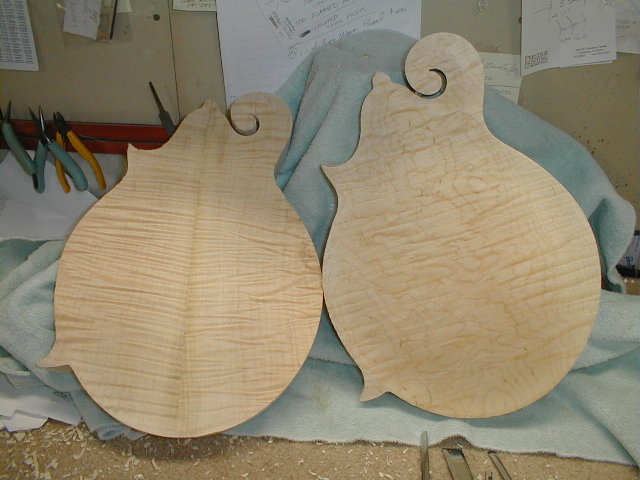
- 57) The backs. Chris' mandolin is a two piece back of red maple from southern Indiana, Gary's is a one piece red maple back. The picture doesn't do them justice!
- 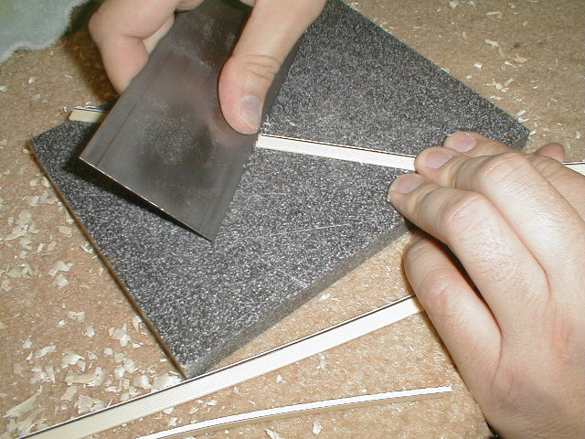
- 58) The black/white lines I've laminated to the edge of the ivoroid are scraped flush.
- 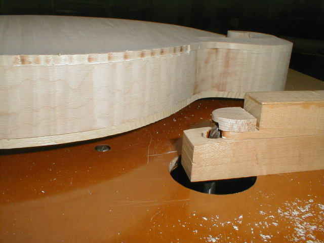
- 59) Here's my router set-up for cutting the binding ledge. I have a router mounted in the router table and a couple of wooden blocks. The bottom block has a hole drilled in it for the router bit(1/4"
spiral cut bit). It allows the body to be held up off the table a bit during routing. The top piece is a woodedn "finger" that is adjustable in an out for depth of cut. The router can be the proper settings.
- 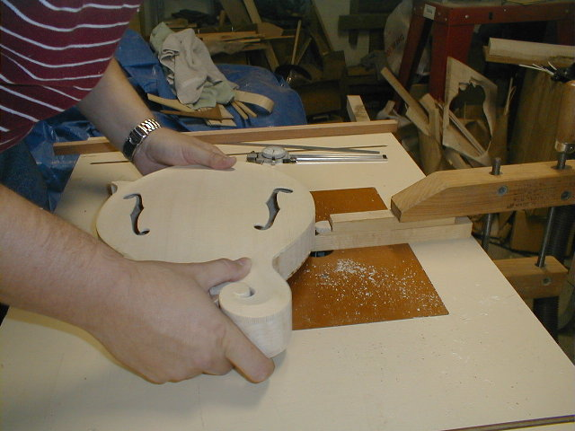
- 60) Here it is in use. I can route around to about the 10:00 position on the scroll. I make the ledge in several passes, taking off no more than 0.030" or so per pass.
- 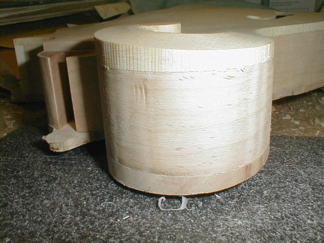
- 61) A lot of folks are confused as to the construction of the scroll, thinking the sides "get wider" as they go around the scroll. That's not the case. The sides are a constant width all the way around. What makes the scroll get fatter toward the button is the thickness of the top and back. Hopefully you can see the different woods in this photos.
- 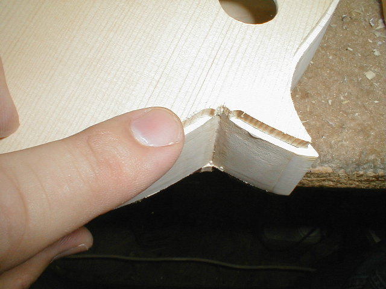
- 62) Another area where the router can't reach. I'll clean this up by and with chisels.
- 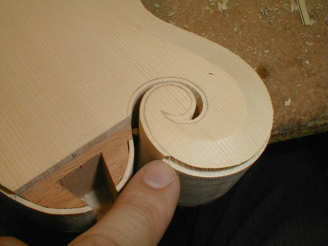
- 63) You can see how far around I can get with the router table. I've taken a pencil and drawn in the line where I'll route the rest of the way around. By the way, this is Gary's mandolin that is getting the "Monroe side binding" treatment.
- 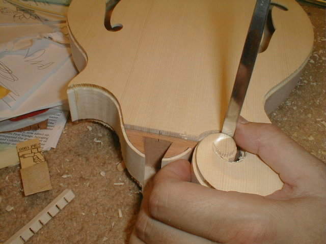
- 64) I make my initial cuts in the scroll with a Dremel using a spiral two flue mill bit. Then I take chisels and carving tools to cut to the line I've drawn. This all has to be done very precisely, as it will cause problems when you put the binding on if everything isn't "just so". I always err on the side of making the ledge a little too wide (no more than 0.010" or so) as I can sand the wood back to the binding once it is on. If the ledge is too narrow, the binding must be scraped back to the wood. With the ivoroid being only 0.060", you just can't afford to scrape away much and expect it to look right.
- 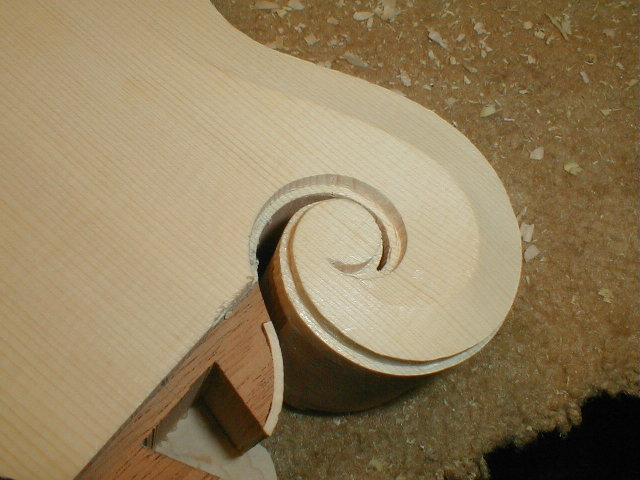
- 65) The first time I did this procedure, it took three hours to do what you see here. It now takes about 45 minutes (per side). This one is ready for binding.
- 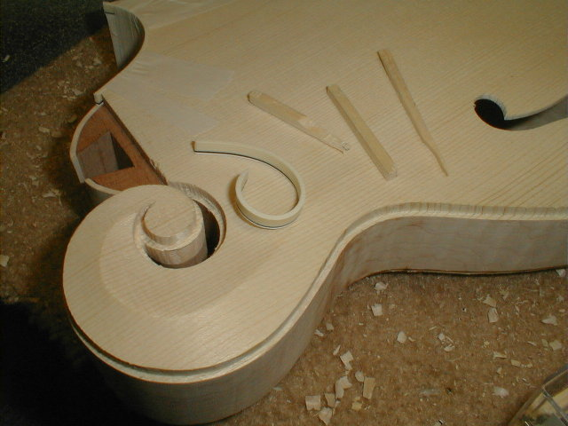
- 66) I've pre-bent a piece of binding and have some small spruce wedges ready to hold it in place while the glue dries. The binding is bent by using a heat gun (very carefully). I've set more than one piece of binding on fire!
- 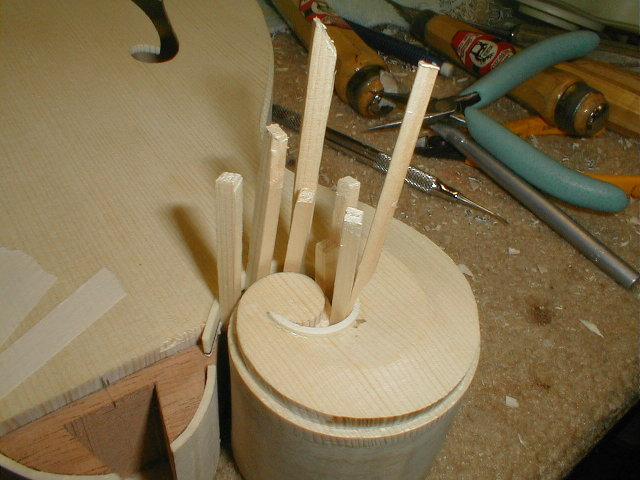
- 67) For glue, I use pieces of ivoroid binding melted in acetone. I put the "glue" in the ledge, put the binding in, and push the wedges in place to hold it.
- 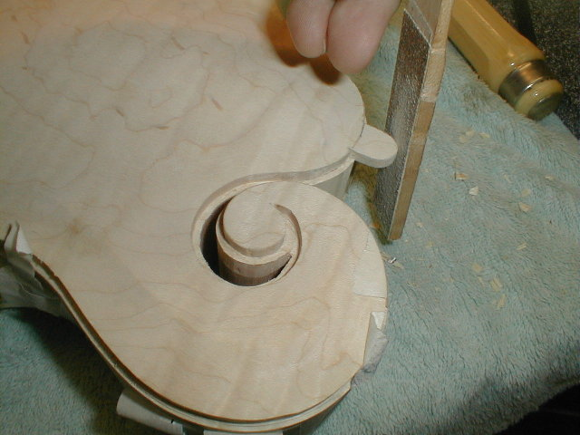
- 68) I'm shaping the button on the heel prior to shaping. Just doing the final sanding here.
- 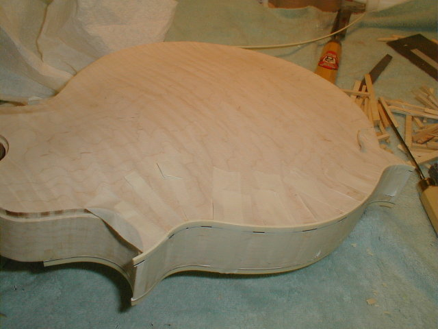
- 69) Gary's mandolin getting the side binding treatment. Strips of masking tape are used to hold it in place while the glue dries.
←
12345678910111213
→
© Lynn Dudenbostel, 2002.